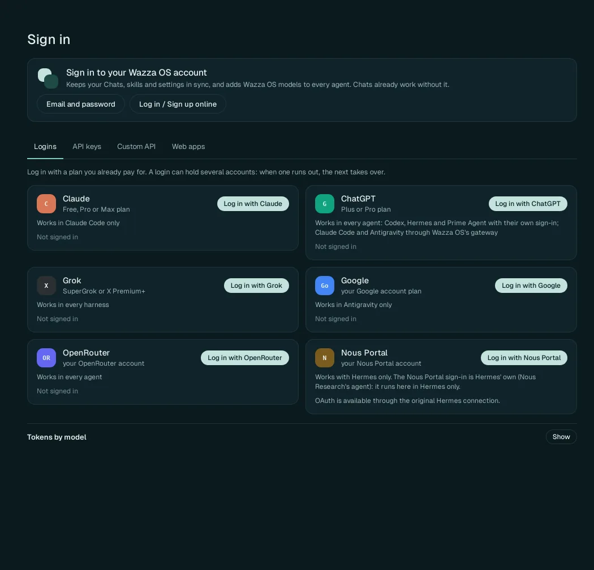
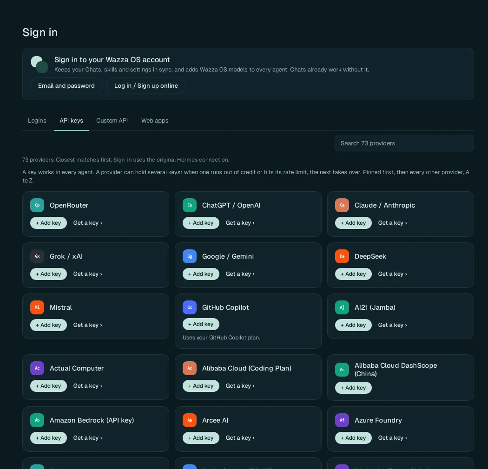
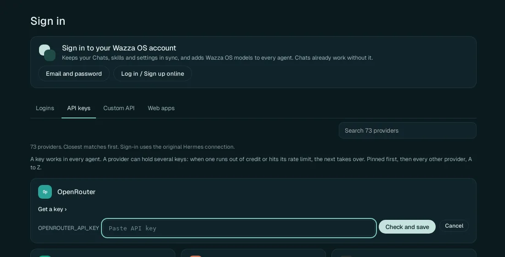
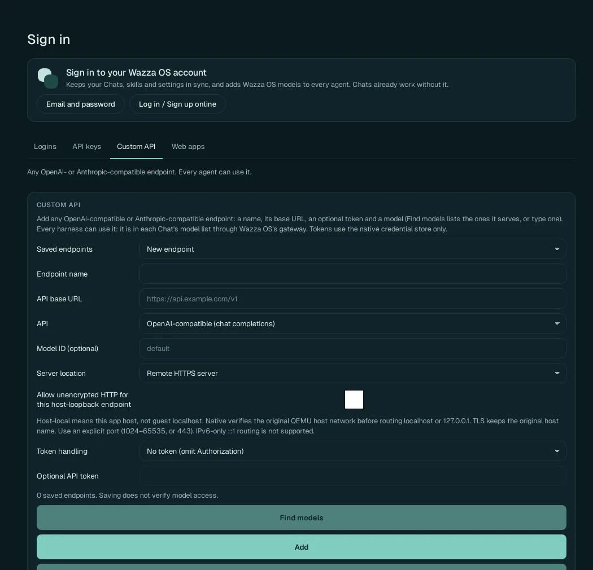
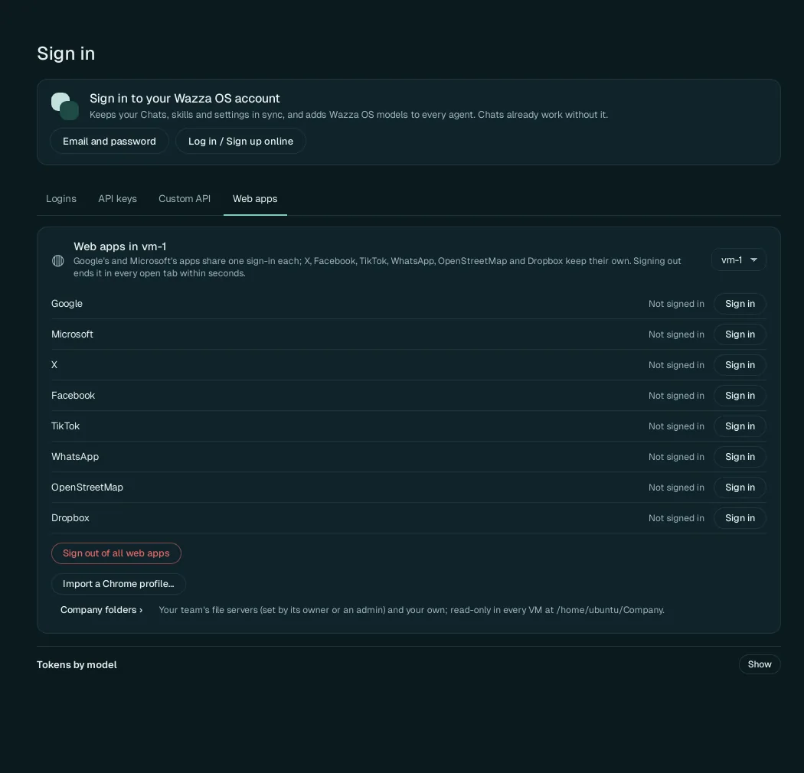

Sign in, plans and API keys
An agent needs a model to talk to, and a model needs someone who pays for it. Wazza OS gives your agents models in four ways: your Wazza OS account, a plan you already pay for (log in once), an API key, or any compatible API (a company gateway, a model on your own computer). All of it is on one page: Home › Sign in.
Since alpha 2, Wazza OS ships no shared OpenRouter key. Until you add one of the four, a Chat has no model to answer with. The quickest start: an OpenRouter key (it reaches hundreds of models, several of them free) or a plan login you already have. A Chat on Hermes with none of them answers at once: Add an OpenRouter key under Sign In › API keys, or sign in to your Wazza account.
Which way is for you#
| You have… | Use | What your agents get |
|---|---|---|
| A Claude, ChatGPT, Grok or Google AI plan | Logins | The plan's models, at no extra cost, within the plan's limits. |
| An account with an AI provider (OpenRouter, OpenAI, Anthropic, Google AI Studio, DeepSeek, Mistral…) | API keys | That provider's models, billed to your account with them. |
| A company AI gateway, or a model running on your computer (Ollama, LM Studio, vLLM…) | Custom API | The models that endpoint serves. |
| A Wazza OS account | Your Wazza OS account | Wazza OS's models (new Chats start on MiMo), Prime Agent's models, and sync of your Chats, skills and settings. |
Open Sign in#
Click Sign in in the Home menu (or the account card at the bottom left of Home). The page has your Wazza OS account at the top, then four tabs: Logins, API keys, Custom API, Web apps. At the bottom, Tokens by model › Show lists the tokens each model used.
Your Wazza OS account#
The card at the top: Keeps your Chats, skills and settings in sync, and adds Wazza OS models to every agent.
- Email and password: the form for an account you have.
- Log in / Sign up online: asks where to open the website: In the VM's browser (Wazza OS's private sign-in tab; log in or sign up with your email or Google; you are signed in by itself) or On this computer (your own browser opens the Google sign-in; paste back the address you land on). The same choices as in the first start.
Earlier versions signed you in on a test website by default; Wazza OS now uses wazza.ai alone. After an update from one of them it says once, as a notice: Wazza OS now uses wazza.ai: sign in again. Sign in with this card.
Once signed in, the account card at the bottom left of Home shows your name instead of Not signed in. Sync of your files and Chat history is then turned on in Settings › Sync & team.
Logins#

1 2 3Open the Logins tab.
Click Log in with … on the plan you have. The provider's own sign-in page opens in Wazza OS's private sign-in tab; sign in there as usual.
The card then says Signed in with the account. Each card says which agents can use it:
| Login | Plan | Works in |
|---|---|---|
| Claude | Free, Pro or Max plan | Claude Code only |
| ChatGPT | Plus or Pro plan | Codex, Hermes and Prime Agent with their own sign-in; Claude Code and Antigravity through Wazza OS's gateway |
| Grok | SuperGrok or X Premium+ | Every agent |
| Your Google account plan | Antigravity only | |
| OpenRouter | Your OpenRouter account | Every agent (the login gives Wazza OS an OpenRouter key of yours) |
| Nous Portal | Your Nous Portal account | Hermes only |
A login can hold several accounts: when one runs out (its plan's limit), the next takes over. Each account shows its state: In use, Ready, Empty · back at (with the time it comes back), Paused or Refused. See Several keys or accounts.
API keys#

1 2 3Find the provider: the most used are first; or type its name in Search 73 providers.
Click + Add key on its card.
No key yet? Get a key › opens the provider's page where you create one.

4 5Paste the key in Paste API key (the field names the variable the key is known by, here
OPENROUTER_API_KEY).Click Check and save. Wazza OS checks the key with the provider, then keeps it. The card then shows the key by its last characters only (
sk-or-v1-…and four characters) with its state, and + Add another … key.
No restart is needed: a Chat that answered Add an OpenRouter key… starts again by itself once the key is saved (its agent shows Setting up your key… for a few seconds); then send your message again.
A key works in every agent: Wazza OS's gateway gives it to agents that do not support that provider themselves (see Provider gateway). Keys are kept in Wazza OS's encrypted store on your computer; agents in the VM never see the key itself.
The GitHub Copilot card uses your GitHub Copilot plan instead of a key.
Several keys or accounts#
A provider can hold several keys, and a login several accounts: when one runs out of credit or hits its rate limit, the next one takes over, and the first is used again as soon as it can work. On each key or account:
- drag its ⋮⋮ handle to change the order;
- its ⋯ menu: Use first, Move up, Move down, Rename…, Replace key…, Sign out or Remove;
- When one runs out (per provider): In order (the first, until it runs out), Take turns, Least used or Random.
Custom API#

Any OpenAI-compatible or Anthropic-compatible endpoint: your company's gateway, a hosted model, or a model running on your own computer. Every agent can use it: its models appear in each Chat's model list through Wazza OS's gateway.
| Field | What to enter |
|---|---|
| Saved endpoints | New endpoint, or one you saved (to change or remove it). |
| Endpoint name | A name for you (it shows in the model lists). |
| API base URL | The address of the API, for example https://api.example.com/v1. |
| API | OpenAI-compatible (chat completions) or Anthropic-compatible. |
| Model ID (optional) | A model it serves; or leave empty and click Find models, which lists the ones it serves. |
| Server location | Remote HTTPS server, or a server on this computer (host-local: this computer, not the VM's own localhost). |
| Allow unencrypted HTTP for this host-loopback endpoint | Only for a server on this computer that has no
HTTPS (for example http://127.0.0.1:11434/v1 for Ollama). Use an explicit port (1024–65535, or 443). |
| Token handling | No token (omit Authorization), or how to send a token. |
| Optional API token | The endpoint's token, if it needs one (kept in the encrypted store). |
Click Add to save it. Saving does not test the model: open a Chat, pick the model, and ask something to check it.
Web apps#

The sign-ins of the VM's web apps (the Google, Microsoft, social network and map apps of Apps), per VM (pick it at the top right). Google's apps share one sign-in (Gmail, Docs, Sheets…), and so do Microsoft's (Outlook, Word…); X, Facebook, TikTok, WhatsApp, OpenStreetMap and Dropbox keep their own.
- Sign in on a row opens that site's sign-in in the VM.
- Sign out of all web apps ends every web app sign-in of the VM, in every open tab, within seconds.
- Import a Chrome profile… copies the Chrome or Chromium profile of your computer (its sign-ins, bookmarks and settings) for the VM's Chromium, and says what was copied, or that no profile was found. Only you can do it; a Chat never can.
- Company folders › opens Settings › Files & sharing › Company folders.
From the command line#
$ wazza --gui provider-keys list --credit
$ wazza --gui provider-keys add --stdin < key.json
$ wazza --gui provider-signin statuskey.json holds {"keys": [{"providerId": "openrouter", "key": "…"}]}: the key goes in on
standard input only, never as a word of the command line (which other users of the computer could see).
list --credit also says what OpenRouter and DeepSeek keys have left.
Every subcommand and its arguments: The command line › Keys and sign-ins.